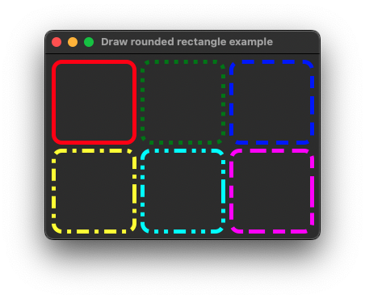

|
xtd
0.2.0
|
Loading...
Searching...
No Matches
draw_rounded_rectangle.cpp
shows how to draw rounded rectangle in paint event using xtd::drawing::graphics::draw_rounded_rectangle.
- Windows

- macOS

- Gnome
#include <xtd/forms/application>
#include <xtd/forms/form>
using namespace xtd::drawing;
using namespace xtd::drawing::drawing_2d;
using namespace xtd::forms;
namespace draw_rounded_rectangle_example {
public:
form1() {
text("Draw rounded rectangle example");
client_size({340, 230});
}
protected:
e.graphics().draw_rounded_rectangle(dot_pen, 120, 10, 100, 100, 10);
dash_pen.dash_style(dash_style::dash);
e.graphics().draw_rounded_rectangle(dash_pen, 230, 10, 100, 100, 10);
dash_dot_pen.dash_style(dash_style::dash_dot);
e.graphics().draw_rounded_rectangle(dash_dot_pen, 10, 120, 100, 100, 10);
dash_dot_dot_pen.dash_style(dash_style::dash_dot_dot);
e.graphics().draw_rounded_rectangle(dash_dot_dot_pen, 120, 120, 100, 100, 10);
custom_pen.dash_style(dash_style::custom);
custom_pen.dash_pattern({4, 1, 3, 2});
e.graphics().draw_rounded_rectangle(custom_pen, 230, 120, 100, 100, 10);
}
};
}
auto main() -> int {
application::run(draw_rounded_rectangle_example::form1 {});
}
static const xtd::drawing::color yellow
Gets a system-defined color that has an ARGB value of 0xFFFFFF00. This field is constant.
Definition color.hpp:476
static const xtd::drawing::color green
Gets a system-defined color that has an ARGB value of 0xFF008000. This field is constant.
Definition color.hpp:212
static const xtd::drawing::color red
Gets a system-defined color that has an ARGB value of 0xFFFF0000. This field is constant.
Definition color.hpp:401
static const xtd::drawing::color blue
Gets a system-defined color that has an ARGB value of 0xFF0000FF. This field is constant.
Definition color.hpp:86
static const xtd::drawing::color cyan
Gets a system-defined color that has an ARGB value of 0xFF00FFFF. This field is constant.
Definition color.hpp:119
static const xtd::drawing::color magenta
Gets a system-defined color that has an ARGB value of 0xFFFF00FF. This field is constant.
Definition color.hpp:296
Defines an object used to draw lines and curves. This class cannot be inherited.
Definition pen.hpp:32
xtd::drawing::drawing_2d::dash_style dash_style() const noexcept
Gets the style used for dashed lines drawn with this xtd::drawing::pen.
static void run()
Begins running a standard application message loop on the current thread, without a form.
Represents a window or dialog box that makes up an application's user interface.
Definition form.hpp:54
void on_paint(paint_event_args &e) override
Raises the xtd::forms::control::paint event.
Provides data for the xtd::forms::control::paint event.
Definition paint_event_args.hpp:30
@ dash_dot
Specifies a line consisting of a repeating pattern of dash-dot.
Definition dash_style.hpp:28
@ dot
Specifies a line consisting of dots.
Definition dash_style.hpp:26
@ custom
Specifies a user-defined custom dash style.
Definition dash_style.hpp:32
@ dash
Specifies a line consisting of dashes.
Definition dash_style.hpp:24
@ dash_dot_dot
Specifies a line consisting of a repeating pattern of dash-dot-dot.
Definition dash_style.hpp:30
The xtd::drawing::drawing_2d namespace provides advanced two-dimensional and vector graphics function...
Definition compositing_mode.hpp:12
The xtd::drawing::text namespace provides advanced GDI+ typography functionality.
Definition font_collection.hpp:14
The xtd::drawing namespace provides access to GDI+ basic graphics functionality. More advanced functi...
Definition actions_system_images.hpp:10
The xtd::forms namespace contains classes for creating Windows-based applications that take full adva...
Definition texts.hpp:219
Generated on Fri Jun 6 2025 09:24:43 for xtd by Gammasoft. All rights reserved.